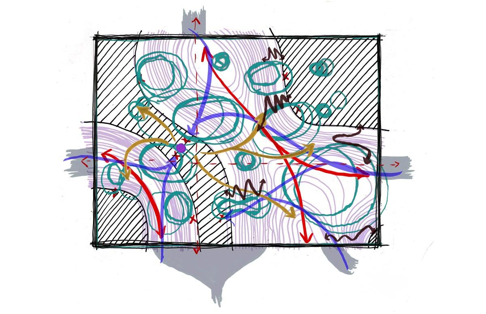
Ogni progetto attraversa una soglia invisibile in cui l’intuizione si trasforma in orientamento. L’immagine mentale iniziale si condensa in una prima decisione strutturante: un gesto, una direzione, un nucleo. È il momento in cui il pensiero si fa spazio e il progetto diventa possibile. Le immagini mostrano questa transizione dal vago alla struttura.
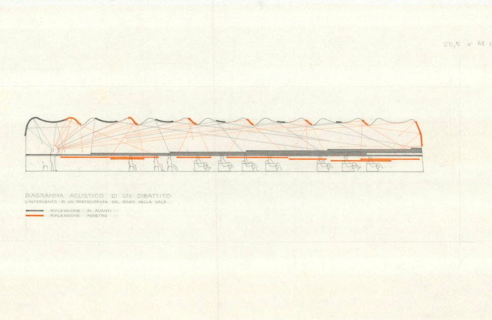
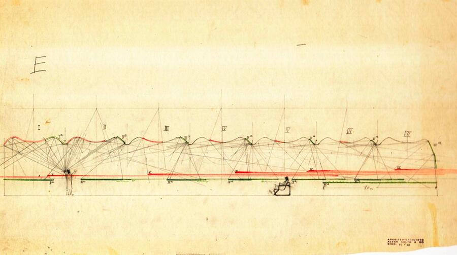
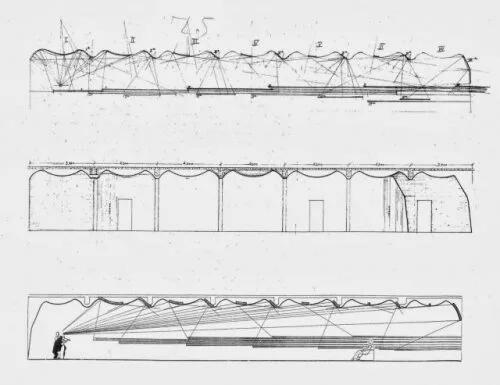
Alvar Aalto utilizzava il disegno come strumento fondamentale nel suo processo di progettazione, in particolare nello sviluppo di soluzioni innovative per le caratteristiche uniche della biblioteca, come il sistema di illuminazione naturale nella sala di lettura e il soffitto a forma di onda progettato acusticamente nell’auditorium. Questi schizzi sono fondamentali per comprendere il suo approccio organico e incentrato sull’uomo all’architettura moderna.
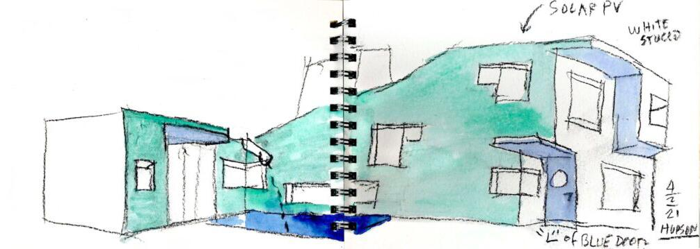
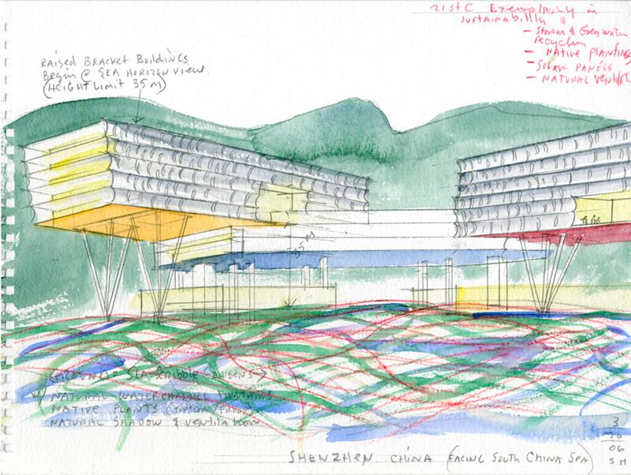
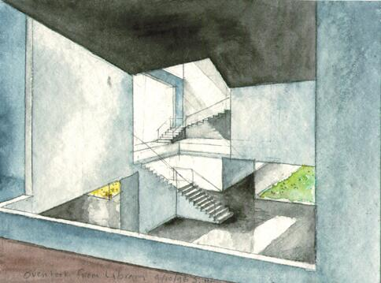
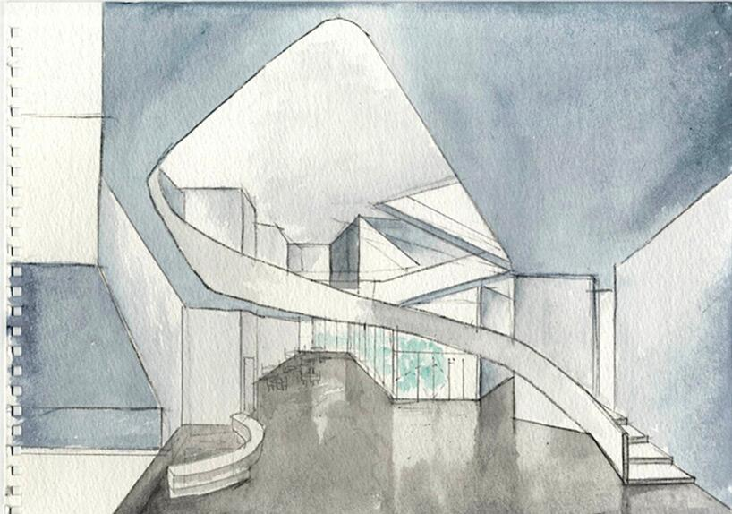
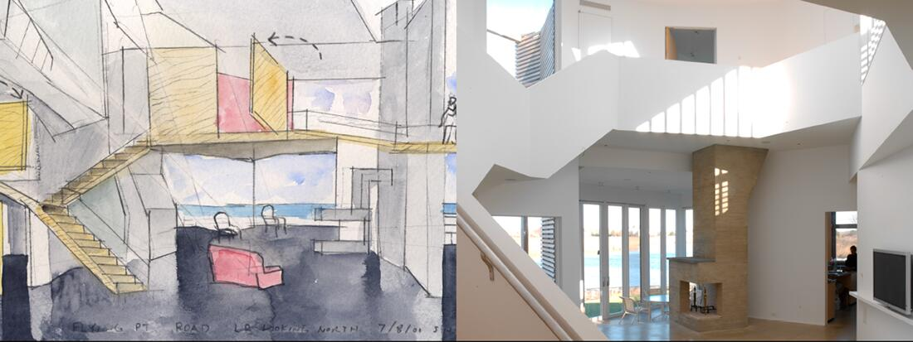
I disegni concettuali ad acquerello di Steven Holl sono fondamentali per la sua metodologia progettuale, fungendo da scintilla iniziale e modalità di pensiero per quasi tutti i suoi progetti. Questi piccoli schizzi, spesso di dimensioni 5x7 pollici, catturano i fenomeni dello spazio, della luce e delle sensazioni prima dell’inizio di qualsiasi costruzione.
Il ruolo degli acquerelli nel suo processo creativo
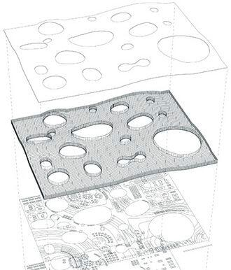
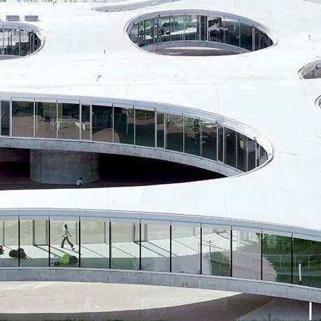
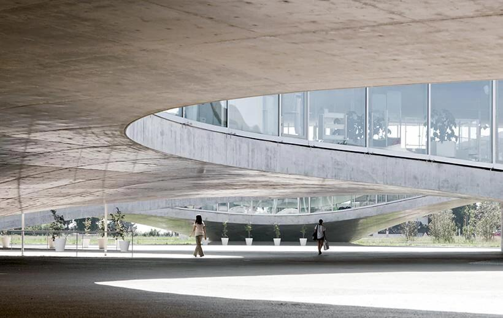
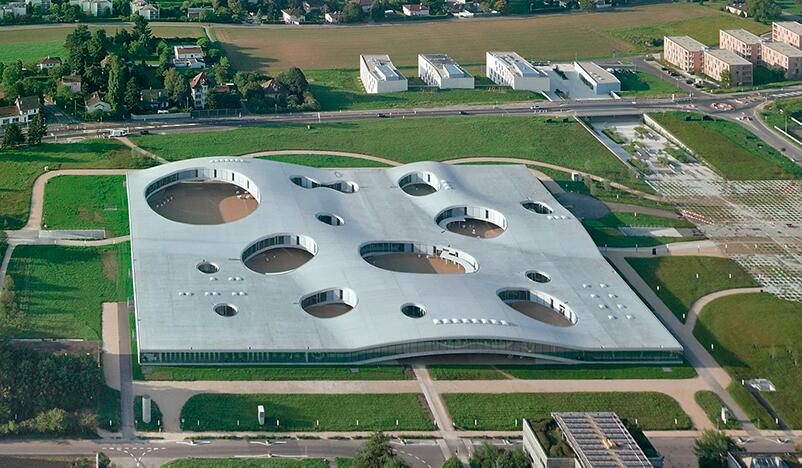
Il diagramma iniziale del Rolex Learning Center di SANAA si concentrava probabilmente sulla sua organizzazione concettuale come spazio unico, continuo e ondulato, che appare più organico di quanto suggerisca la sua pianta rettangolare. Questo approccio è stato utilizzato per creare un ambiente aperto e fluido che sfida gli spazi di apprendimento tradizionali.
Il progetto è stato guidato dall’idea di un unico grande piano pubblico fuori terra, un “paesaggio astratto”, che utilizza variazioni topografiche anziché muri fisici per definire le diverse aree funzionali. Gli elementi chiave del diagramma includevano: